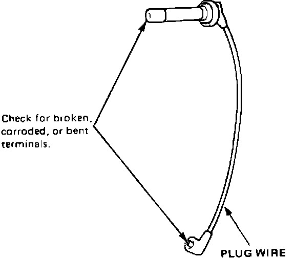
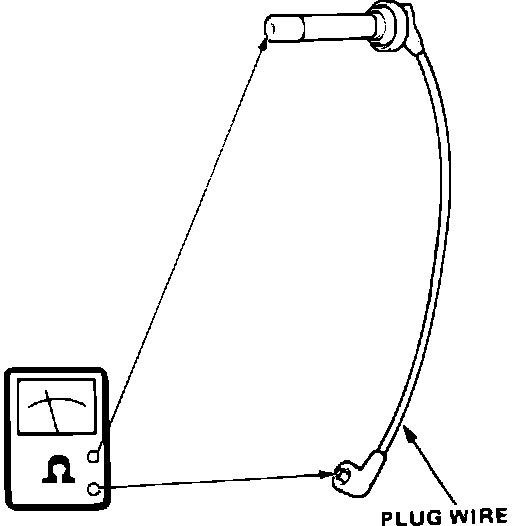

Ignition Cable: Testing and Inspection
CAUTION: Carefully remove the ignition wires by pulling on the rubber boots. Do not bend the wire or the conductor may be broken.Typical Wire Inspection:

1. Check the condition of the wire terminals. If any terminal is corroded, clean it and if it is broken or distorted, replace the wire.
Typical Wire Inspection:

2. Connect ohmmeter probes and measure resistance.
Resistance: 25K ohms max. at 70~F (20~C)
3. If resistance exceeds 25,000 ohms, replace the ignition wire.